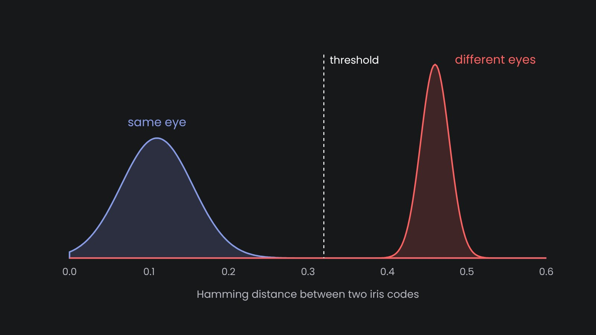

Iris Authentication: How Accurate It Is and How to Tune It
Why do the largest identity programs, from India's Aadhaar to the UAE border control, rely on iris? The answer is statistical. Iris separates different people with a margin that other common biometric modalities do not have, and this is what allows searching a database of millions without drowning in false matches. Below I explain where this margin comes from, what reduces it in real deployments and which settings are in your hands.
Why iris separates people so well
An iris code is a long string of bits (see how iris recognition works). Compare codes from two different eyes, and about half of the bits differ, simply because unrelated bits agree by chance half of the time. The spread around that half is narrow. With hundreds of effectively independent bits, it is very unlikely that two different irises agree on, say, 70% of them.
Codes from the same eye, taken on different days, differ much less, usually in 10–20% of bits. Blur, eyelids and a different pupil size push this number up, but rarely anywhere near the range of different eyes.

Large evaluations confirm this. Daugman analyzed 200 billion comparisons from the UAE border system, and NIST ran its IREX program on several vendors' matchers. Both show the distribution of different eyes so tight that a threshold can be set with a false match rate well below one in a million per comparison, while the great majority of genuine attempts are still accepted.
Verification and identification are different problems
Verification (1:1) answers the question "is this the person they claim to be?" It is one comparison and one decision, so a false match rate of one in a million is more than enough.
Identification (1:N) answers the question "who is this?" or "is this person already enrolled?" The probe is compared with everyone in the database, so the chance of at least one false match grows with N. Consider a false match rate of one in a million per comparison and a database of a million people: this gives roughly one false hit per search. This way for 1:N the threshold has to be stricter, and it should become stricter as the database grows. Iris works well here because its distribution of different eyes is narrow enough to allow a strict threshold without rejecting too many genuine users.
What actually drives errors
- Capture quality. Most false rejections come from blurred frames, half-closed eyes and gaze to the side. A scanner that checks quality before accepting a frame, plus an operator who asks for a second look, does more for accuracy than any matcher upgrade.
- Usable iris area. When eyelids and lashes cover a large part of the iris, fewer bits are compared and the score is less reliable. Our Cloud Iris API returns the occluded share with every enrollment, so the operator can retake the image before it becomes a bad template.
- Enrolling both eyes. Two irises give two independent chances. Search with either eye, and require both when the stakes are high.
- Cross-device use. Templates captured on one scanner and compared with templates from another score slightly worse. Test with the actual mix of hardware you will deploy.
- Time. The iris is stable, but match scores drift a little over the years, mostly because of changing pupil dynamics and different cameras. Long-running systems refresh templates when a person is verified anyway.
Spoofing
It is hard to spoof an iris covertly: unlike a fingerprint, it cannot be lifted from a glass. Known attacks use printed iris images, patterned contact lenses and replayed video. Countermeasures check things a print cannot do: pupil reaction to light, reflections in the right places, the texture of a real cornea. If your threat model includes deliberate attacks, require presentation attack detection tested according to ISO/IEC 30107-3, and keep an operator in the loop where possible.
How to choose the threshold
We do not recommend taking a threshold from a datasheet. Run the system on a sample of your own population and hardware instead. Enroll a few hundred people, collect genuine attempts on a different day and compute the two distributions. Then choose the false match rate your use case can tolerate, read the threshold off the curve of different eyes, and check which false rejection rate it gives. For 1:N, repeat the check whenever the database grows by an order of magnitude.
We run this kind of evaluation with customers before a rollout: their data, our open-source matcher, and a report with the curves and the proposed operating point.